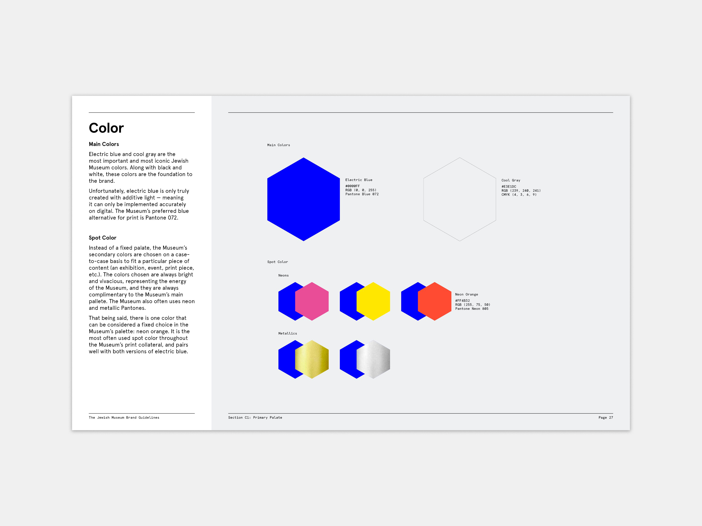

Jewish Museum
While working with the Jewish Museum, I created and edited branded content such as brochures, pamphlets, fundraisers, web ads, and social posts. I worked there during the summer of 2018.


During my time with them, I noticed a problem with their brand guidelines: they were completely outdated. The Museum had been rebranded by Sagmeister & Walsh in 2014 and, by the time I had gotten there, brand practices had been taken in a wholly different direction. I took the initiative to bring this up with my supervisor and offered to remake the guidelines.
My art director, manager, and I concluded that the goal of this project was to create a comprehensive document covering graphic treatments throughout all Museum departments to facilitate consistency throughout the brand.
My approach to solving this problem was to review brand materials from each area of the brand from the past year and create a list of common practices and treatments for brand assets. In addition, I consulted with my art director and fellow graphic designers to see how they treated the brand. After collecting information for a month I wrote the descriptions and then organized all the information. After I had finished preparing everything, I began designing the final document.

The new brand guidelines were finished within two months altogether and are still in use at the Jewish Museum. They are used by graphic designers and staff throughout the Museum to create consistent branded content. This project taught me how important a brand book is to a brand’s success.